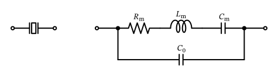

晶体为什么能做参考
晶体的机械共振可等效为串联的 Rm、Lm、Cm，外加并联寄生 C0。在串联与并联谐振之间，晶体呈感性。Pierce 电路利用这段感性区间，并用外部两只电容提供负载。晶体高 Q 使频率对负载变化相对不敏感。



改变负载，看频率往哪移
用讲义的 Cm=5 fF、C0=2 pF 例子。晶体标称负载附近看的是相对标称点的误差。图的参考是串联谐振频率。
晶体的机械共振可等效为串联的 Rm、Lm、Cm，外加并联寄生 C0。在串联与并联谐振之间，晶体呈感性。Pierce 电路利用这段感性区间，并用外部两只电容提供负载。晶体高 Q 使频率对负载变化相对不敏感。

用讲义的 Cm=5 fF、C0=2 pF 例子。晶体标称负载附近看的是相对标称点的误差。图的参考是串联谐振频率。